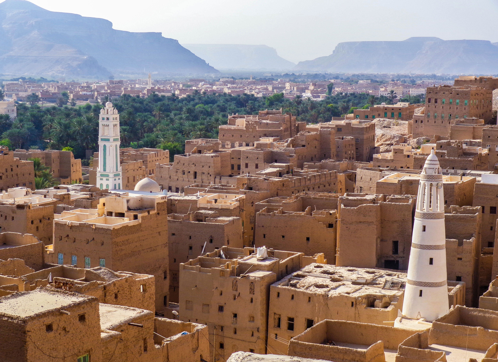
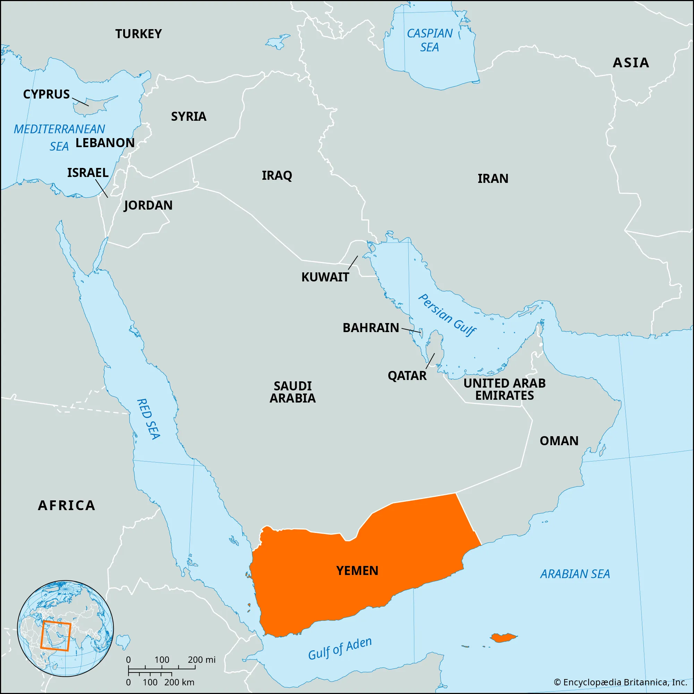
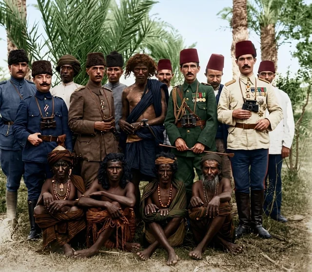
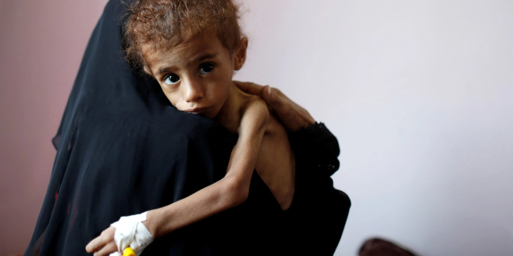
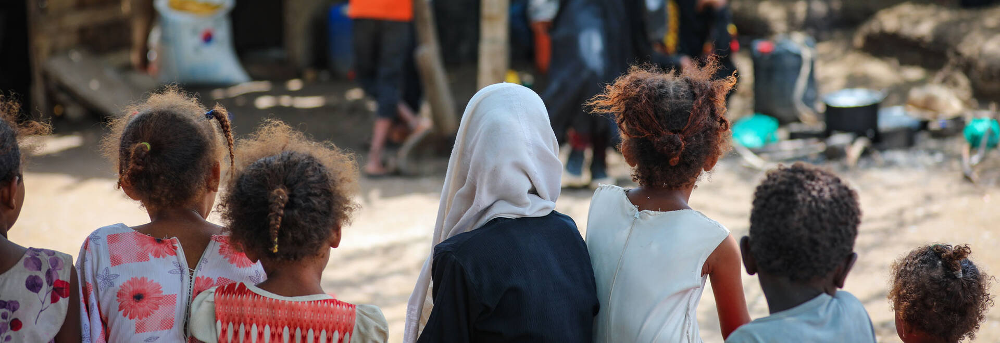
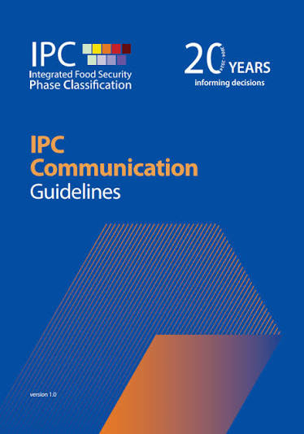
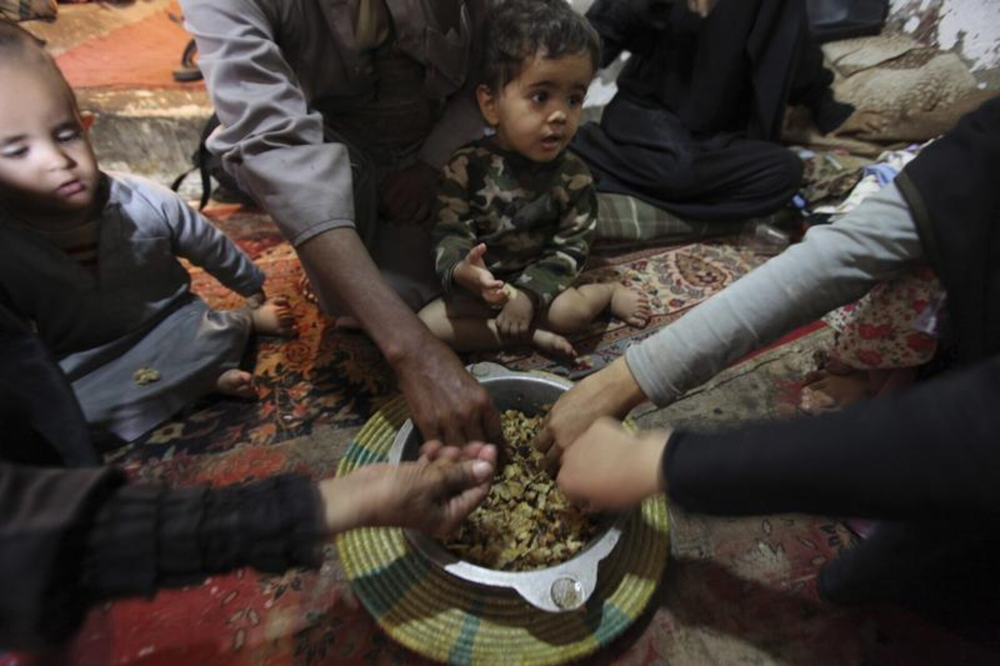
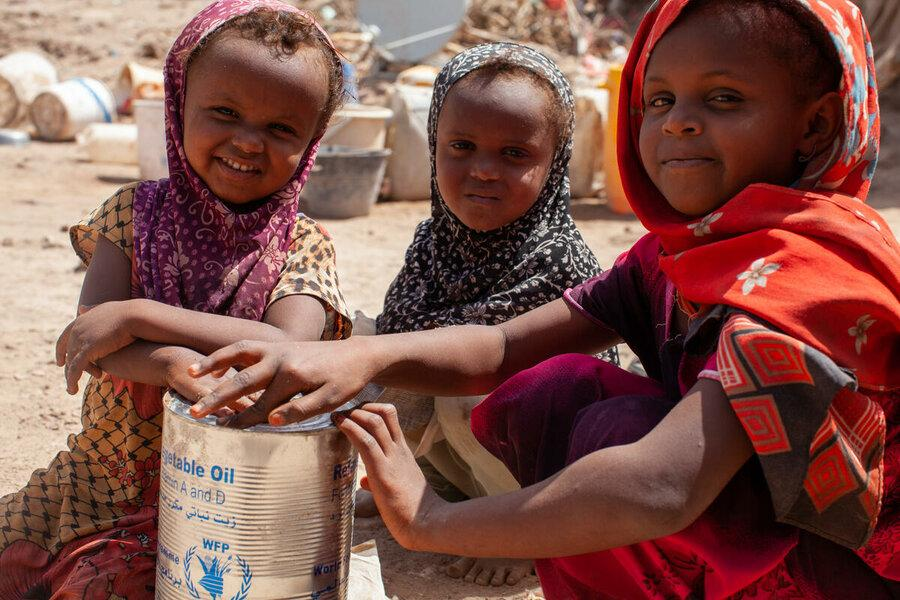

Yemen
Our Country is... Yemen

Location
Where is Yemen?
Yemen is located in the southwestern part of the Arabian Peninsula in the Middle East. It borders Saudi Arabia to the north and Oman to the east. The Red Sea lies to the west, while the Gulf of Aden and Arabian Sea lie to the south. Yemen covers approximately 528,000 square kilometres and includes several islands, including Socotra.

Population
How many people live in Yemen?
Yemen’s population was approximately 41.8 million in 2025 according to World Bank data. The country’s rapidly growing population puts additional pressure on limited water supplies, agricultural land, employment and food systems.

Food Insecurity
How serious is Food Insecurity?
Food insecurity in Yemen is extremely serious.
In 2026, the UN estimated that 18.3 million people were acutely food insecure across Yemen.

Analysis
The latest IPC analysis for government-controlled areas found that approximately 5 million people were experiencing IPC Phase 3 or worse between March and May 2026. This included about 1.4 million people in IPC Phase 4, known as Emergency. During the June to September 2026 lean season, 5.4 million people were projected to experience Crisis or worse.

Classification
The IPC system classifies food insecurity from Phase 1, Minimal, to Phase 5, Catastrophe. Crisis, Emergency and Catastrophe represent increasingly severe levels of food insecurity.


Statistics
Key Statistic
18.3 million people in Yemen were estimated to be acutely food insecure in 2026. That is almost half of the country’s population.

Environment
Natural Biome
Yemen is mainly an arid and semi-arid country. Large areas have desert or dryland environments, while the western and southern highlands are cooler and receive more rainfall.
The country has several different natural environments, including:
- Desert and very dry areas in the east
- Hot coastal plains along the Red Sea and Gulf of Aden
- Mountainous highlands in the west
- Semi-arid agricultural areas
- Grasslands and rangelands used for livestock
Yemen’s climate varies greatly because of its mountains and differences in altitude.
Climate
Yemen is generally hot and dry, but temperatures and rainfall vary considerably between regions.
Coastal areas are hot and humid, while the western mountains are cooler and receive more seasonal rainfall. The eastern part of Yemen is much drier and contains large desert areas.
Annual rainfall can be less than 50 mm in some coastal and eastern areas but can reach around 1,000 to 1,200 mm in some southern and western highland areas.
Temperatures can exceed 40°C in lowland and desert areas. Highland areas can be much cooler, particularly during winter.
Vegetation and Soil
Vegetation is generally sparse in the dry parts of Yemen because there is little rainfall. More vegetation grows in the wetter highlands and around wadis, which are valleys that can carry water after rainfall.
Agricultural soils vary across the country. Wadi areas contain alluvial soils deposited by flowing water, while many highland areas have steep, eroded soils. Soil erosion and loss of vegetation can reduce agricultural productivity.
Farmers have traditionally used terraces on mountain slopes to slow water runoff, reduce erosion and retain soil moisture.
How Does the Biome Affect Food Production?
Yemen’s dry environment makes farming difficult because agriculture depends heavily on limited rainfall and groundwater.
Around half of Yemen’s cultivated land is rainfed, meaning farmers depend on rainfall rather than permanent irrigation. Rainfall can also arrive in short, intense storms, making it difficult to store and use efficiently.
Water scarcity limits the amount of land that can be farmed. High temperatures increase evaporation, while droughts can reduce crop yields.
Despite these challenges, Yemen’s highlands and valleys can support crops such as sorghum, wheat, barley, vegetables and fruit. Traditional terraces and water-harvesting systems help farmers make better use of the limited rainfall.